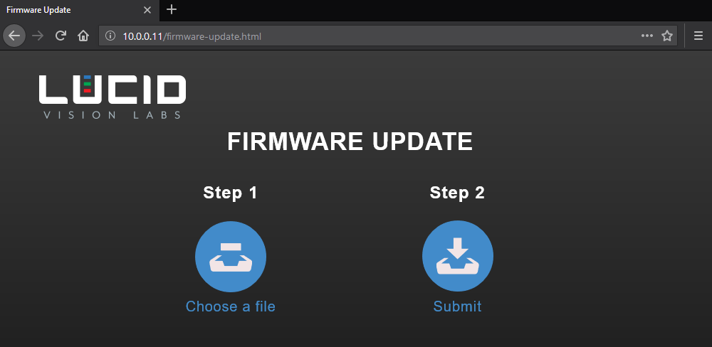

Firmware Update¶
Use the camera’s Firmware Update page to update your camera’s firmware. Updating your camera’s firmware is easy with our firmware fwa file. The firmware fwa files for each camera are located on our Downloads page.
Every Lucid camera comes with an on-board firmware update page that can be directly accessed in a web browser. If you already know your camera’s IP address you can access it at http://{your-camera-ip-address}/firmware-update.html.
{kind=link}
Updating your Camera Firmware¶
- Navigate to your camera’s firmware update page in your web browser (http://{your-camera-ip-address}/firmware-update.html).
- Click Choose a file on the Firmware Update page and select your fwa file.
- Click Submit on the Firmware Update page. This will start the firmware update process.
The Firmware Update page will show the progress of the update. During the update, the camera will not be accessible for control or image capture. The update may take a few minutes to complete. Please refrain from removing power from the camera during the update.
When the firmware update is complete, the camera will reboot. Once the update is finished, you can close the Firmware Update page and access the camera again.